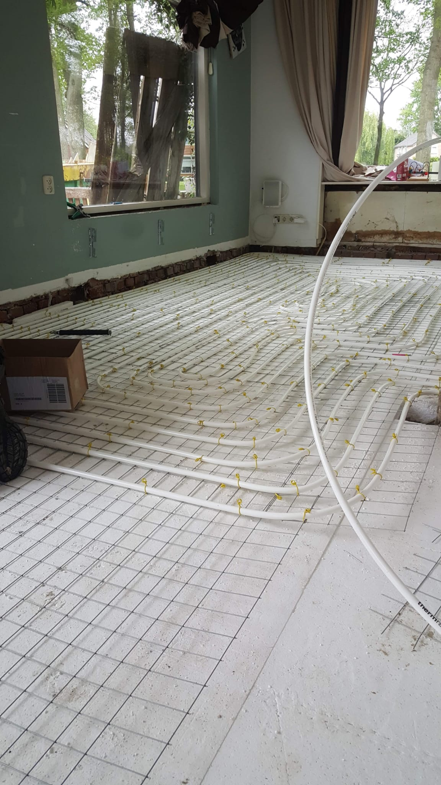

Vloerverwarming Zuidlaren
Vloerverwarming in Zuidlaren. Wij zitten om de hoek.
Wij zitten aan de Verlengde Stationsweg in Zuidlaren. App een foto en ongeveer hoeveel m² het is. Je hoort binnen één werkdag van ons.
Ons directe werkgebied
- Binnen een kwartier bij je
- Geen voorrijkosten bij een opname
- Eén aanspreekpunt, ook na oplevering
Welke route past bij jouw woning?
Bij de opname meten we je vloer. Daarna weet je welke route het wordt.
Infrezen
We frezen sleuven in je bestaande dekvloer, leggen de buis in en storten dicht. Zonder sloop en zonder extra vloerhoogte. Vaak mogelijk bij bouw uit de jaren 60 en 70.
Droge vloerverwarming
Buizen in isolatieplaten, zonder volle cementdekvloer. Voor woningen waar een extra laag te veel hoogte kost.
Meer over laagopbouwKruipruimte en schuimbeton
Voldoet je ondergrond niet voor infrezen? Dan stellen we bijvoorbeeld isolatie en schuimbeton in de kruipruimte voor.
Meer over schuimbetonNiet zeker welke route bij jouw woning past?
Stuur een appjeWij kennen de woningen in en rond Zuidlaren
Vooral koopwoningen: nieuwbouw, verbouw en renovatie. We adviseren over de opbouw, de vloerdikte en de aansluiting op je warmtebron.
- Aansluiting op warmtepomp of cv
- Zones en regeling afgestemd, ook bij grote open ruimtes
- Eén aanspreekpunt van opname tot oplevering

Nieuwbouw of renovatie
Nieuwbouw
We denken mee vanaf de ruwbouw: leidingverdeling, verdeler, aansluiting op warmtepomp of cv, en de dekvloer.
Renovatie
We meten eerst vlakheid, draagkracht en hechting. Daarna weet je of infrezen kan of welke opbouw beter past.
Neem direct contact op
App ons een foto van je vloer
Een foto en een paar regels is genoeg. Je hoort binnen één werkdag van ons. Handig als je overdag weinig tijd hebt.
Vragen uit Zuidlaren
Alle veelgestelde vragenWerken jullie ook in Haren, Eelde-Paterswolde, Glimmen en Vries?
Ja. Dat is onze directe achtertuin. Vanaf de Verlengde Stationsweg sta je binnen een kwartier in Haren, Glimmen, Eelde-Paterswolde, Vries, Tynaarlo, Yde of De Punt. Voor een opname rijden we daar zonder voorrijkosten heen.
Wat kost vloerverwarming in Zuidlaren en omgeving?
Dat hangt af van het oppervlak, de ondergrond en of we in een bestaande vloer frezen of in nieuwbouw leggen. Loop de prijsindicatie door voor een richtbedrag; de vaste prijs volgt na een opname bij je thuis.
Kunnen jullie infrezen in een woning uit de jaren zestig of zeventig?
Meestal wel. We meten eerst vlakheid, draagkracht en hechting van de bestaande dekvloer. Kan het veilig, dan frezen we sleuven en leggen we de buis daarin — geen sloop, geen extra vloerhoogte. Voldoet de ondergrond niet, dan zeggen we dat vooraf en stellen we een andere opbouw voor.
Staat je vraag er niet bij? App ons gerust.
Stuur een appje